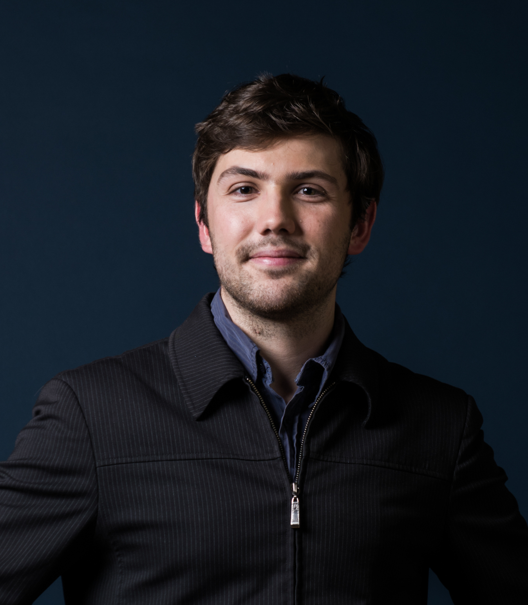

Postodoctoral research scientist
Rabadan Lab, Columbia University, New York
I did my PhD at Inria Saclay in the DataShape team, under the supervision of Steve Oudot. My research focuses on topological data analysis (TDA) and statistical machine learning (ML). I contributed to the analysis of topological descriptors and their use in ML methods such as kernel-SVM or deep learning. My favorite languages are C++ and Python, but I also know a bit of R, Matlab and Java. I am also very familiar with scikit-learn and tensorflow.
Here are some useful links:
I am happy to say that I was awarded the following prizes for my work:
- 2nd PhD Prize from ED STIC
- Thiessé de Rosemont / Schneider Prize from Chancellerie des Universités de Paris
Contact info:
Phone: +1 917-941-5182
Email: mathieu.carriere3[at]gmail.com
Skype: mathieu.carriere